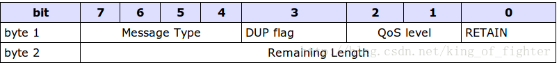
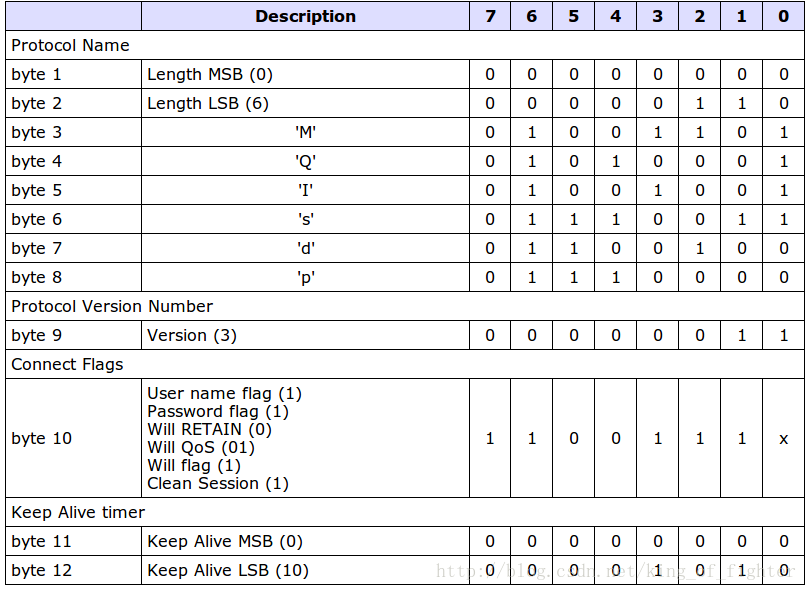

MQTT入门
Table of Contents
1 + 参考文档
http://www.cnblogs.com/shanyou/p/4085802.htmlx http://public.dhe.ibm.com/software/dw/webservices/ws-mqtt/mqtt-v3r1.html
2 mqtt概览
- 代理
- 发布
- 订阅
3 mqtt协议详解
3.1 协议格式
固定头部 + 可变头部 + 消息体

- 固定头部的结构
- MessageType (占4个字节,0和15为保留数值)
0 => // 保留字 1 => "MQTT_CONNECT" // 请求连接 2 => "MQTT_CONNACK" // 请求应答 3 => "MQTT_PUBLISH" // 发布消息 4 => "MQTT_PUBACK" // 发布应答 5 => "MQTT_PUBREC" // 发布已接收，保证传递1 6 => "MQTT_PUBREL" // 发布释放，保证传递2 7 => "MQTT_PUBCOMP" // 发布完成，保证传递3 8 => "MQTT_SUBSCRIBE" // 订阅请求 9 => "MQTT_SUBACK" // 订阅应答 10 => "MQTT_UNSUBSCRIBE" // 取消订阅 11 => "MQTT_UNSUBACK" // 取消订阅应答 12 => "MQTT_PINGREQ" // ping请求 13 => "MQTT_PINGRESP" // ping响应 14 => "MQTT_DISCONNECT" // 断开连接 15 => // 保留字
- DUP flag (占4个字节,0和15为保留数值)
Bit Position 3
- Qos
Bit Position 2-1
主要用于PUBLISH（发布态）消息的，保证消息传递的次数。 00表示最多一次 即<=1 01表示至少一次 即>=1 10表示一次，即==1 11保留后用
- Retain
主要用于PUBLISH(发布态)的消息，表示服务器要保留这次推送的信息，如果有新的订阅者出现， 就把这消息推送给它。如果不设那么推送至当前订阅的就释放了。
4 固定头部的第2个byte
是用来保存接下去的变长头部+消息体的总大小的。 但是不是并不是直接保存的，同样也是可以扩展的，其机制是，前7位用于保存长度，后一部用做标识。 我举个例了，即如果计算出后面的大小为0<length<=127的，正常保存 如果是127<length<16383的，则需要二个字节保存了，将第一个字节的最大的一位置1,表示未完。然后第二个字节继续存。 拿130来说，第一个字节存10000011,第二个字节存000000001，也就是0x83,0x01,把两个字节连起来看，第二个字节权重从2的8次开始。 同起可以加第3个字节，最多可以加至第4个字节。故MQTT协议最多可以实现268 435 455 (0xFF, 0xFF, 0xFF, 0x7F)将近256M的数据。 可谓能伸能缩。
5 可变头部

- Protocol Name( byte 1- byte 8 )
len = 1 - 2 字节 content 3 - 8 字节
- Protocol Version( byte 9)
协议版本号，v3 也是固定的。 二进制 十进制 00 00 00 11 => 3
- Connect Flag
连接标识，有点像固定头部的。8位分别代表不同的标志。第1个字节保留。
Connect Flag
bit 1 fdf dddddddaaaa bit 1 fdf dddddd
6 MQTT之连接和心跳
详细
Byte Position Bit Position dfd Byte Position Bit Position dfd byet 1 7 6 5 4 3 2 1 1 0 byet 1 7 6 5 4 35 20 1 1 0 byet 1 7 6 4 3 2 1 0 dddd